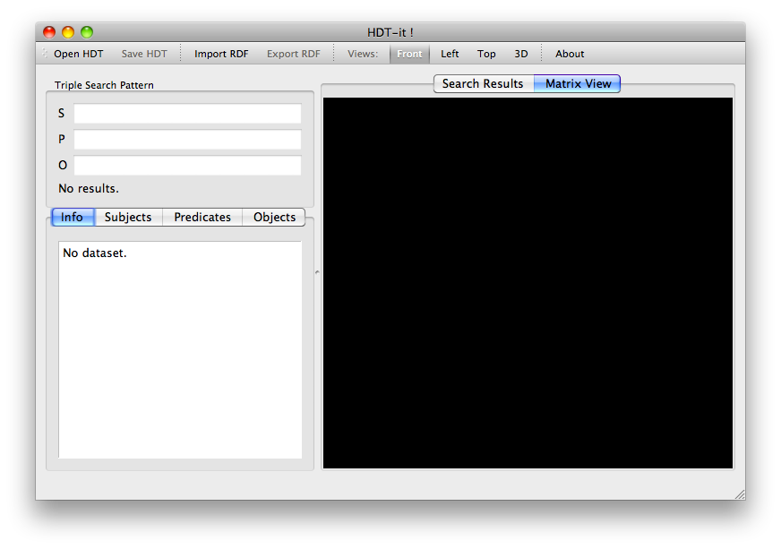

Purpose
HDT (Header, Dictionary, Triples) is a binary representation for RDF that compresses big datasets in order to store and share big RDF files.
HDT-it! is a tool that allows generating and consuming HDT files. As an examples, the tool allows to search for basic graph patterns, and shows a global 3D Matrix of the RDF distribution to understand the organization of the information.
This document teaches the user how to use the tool to create and browse HDT files.
Installation.
Windows
To install HDT-it! on Microsoft Windows, download the binary package for Windows from the RDF-HDT Web page. Uncompress the zip file using any appropriate software (Such as IZarc) to any folder of your choice. To launch the application, just double click on hdt-it.exe. You might find usefull to have a shortcut on your desktop. To do so, drag the hdt-it.exe file to your desktop using the right button of the mouse, and select "Create shortcut".
Should you want to uninstall HDT-it!, just delete the folder on your hard drive.
MacOSX
To install HDT-it! on MacOSX, download the binary package for MacOSX from RDF-HDT Web page. Launch the dmg file and drag the HDT-it! app to your Applications folder. Then you can launch HDT-it! the same way as any MacOSX application. You can create a shortcut to it by droping the app from the Applications folder to your dock.
Note that HDT-it! is a Universal binary, and can run on 32 and 64 bit Intel platforms, but cannot run on PowerPC.
Should you want to uninstall HDT-it!, just drag the App from the Applications folder to the Trash.
Linux
To install HDT-it! on Linux, download the binary package for Linux from RDF-HDT Web page. Untar the package on your home and launch it using the hdt-it.sh package.
For some distributions, you might need to install Qt 4.7, and libraptor2 using the package manager.
First steps
After opening HDT-it, you can see the following view:

The toolbar on the top represents different options for opening, converting and displaying information.
On the top left, you can insert a triple search pattern. It allows searching for a specific subject, predicate or object. Any field left blank means "any", so the default option will show all triples.
The bottom left shows all the information about the current dataset. It is usually read directly from the "Header" part of the HDT. The tabs reading "Subjects", "Predicates" and "Objects" reveal all the different components available in the dataset.
The right part has two tabs: Search Results and Matrix View. It allows browsing results both in text and visual manners.
Managing datasets:
The first step when using HDT-it is loading a dataset. It uses the HDT format to keep all the information in a compact but at the same time accessible manner.
Load HDT
If you have any dataset in HDT, you can load it using the "Open HDT" option from the toolbar. The instalation distribution package contains several example datasets that you can play with. You can also download bigger datasets from the Dataweb page.
Import RDF
You also probably want to load your own dataset. HDT-it! is able to load RDF data in several well-known RDF formats (NTriples, N3, Turtle and RDF-XML) and convert it to HDT. To import data, select Import RDF and follow the instructions. You need to specify some information, namely:
- The file source of RDF
- The specific format of the different sections of HDT. Depending on this options we can obtain a compromise between compression ratio and search capabilities. The default options will provide a fair balance between the two.
The process of importing the RDF file will take a while. We recommend using "NTriples" as input format since it is better optimized and can import it statement by statement using fewer RAM memory. For really big datasets, you may need a powerfull computer with a high amount of RAM memory, since the conversion process needs to construct intermediate data structures. In these cases, we recommend using the commandline tools available in HDT-lib on a server machine. Then the resulting HDT file can be loaded using a more modest computer since it is already compressed and ready to be used.
Save HDT
This option allows saving the HDT file. It is specially useful when you just imported a RDF file and want to keep an HDT version for faster loading and consumption.
Export RDF
You can export any HDT file back to RDF to consume it using traditional tools or loading it to any RDF database. Just select export and by default the tool will serialize it to NTriples.
Browsing
Dataset Information
On the bottom left part of the window, all the information available about the dataset is shown. Namely the size of the original dataset and the compressed HDT version (to highlight the savings of using HDT). It also shows the details about the dictionary (the number of entries in the dictionary and the number of triples). It is also interesting to see the relative size of the dictionary against the triples.
List of Components.
Also on the bottom left you can select any of the components (Subjects, predicates, or objects). It will show a list of all the different elements available. The user can double click on any item to add it to the search box.
Visualization.
The visualization widget allows the developer to have an overall view of the dataset. It allows understanding the structure of the RDF data.
Matrix coordinates.
The matrix view is based on an Adjacency Matrix. The dictionary part of the HDT assigns numerical ID to each of the different subject, predicate and object. Then, each RDF triple can be referred as a triple of numerical IDs, such as 234,5,3425. This ID can be interpreted as a point in a 3-Dimensional space, therefore it can be plotted as a point in a 3D graph axis.
 To better see the details, the user can rotate the view by drag and droping using the mouse, or zoom using the mouse wheel. To pan the position, drag the
To better see the details, the user can rotate the view by drag and droping using the mouse, or zoom using the mouse wheel. To pan the position, drag the
Rotation/Translation/Views.
Browsing areas.
Interpreting information.
Search.
Search Patterns.
Acknowledgements
HDT was possible thanks to: